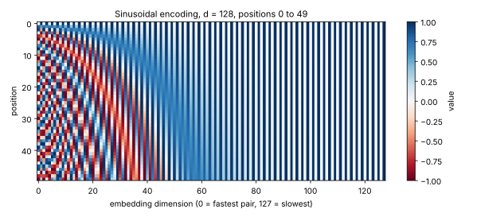

flowchart LR A["<b>Token embedding</b><br/>xᵢ ∈ ℝᵈ"] -->|"① add position<br/>xᵢ + pᵢ"| B["<b>Projections</b><br/>qᵢ = W_q xᵢ, kⱼ = W_k xⱼ"] B -->|"③ rotate q, k<br/>(RoPE, Part 9)"| C["<b>Scores</b><br/>sᵢⱼ = qᵢᵀ kⱼ / √d_k"] C -->|"② subtract distance penalty<br/>sᵢⱼ − m·(i−j)"| D["<b>Softmax and weighted sum</b><br/>Σⱼ aᵢⱼ vⱼ"]
Positional Encoding Basics: Why Transformers Need Positions
llms
transformers
positional-encoding
Attention has no sense of order. Sinusoidal, learned, relative-bias and ALiBi encodings are four ways to add it.
Take the sentence “the cat sat on the mat” and shuffle it into “mat the on sat cat the”. A transformer layer (without a causal mask), as originally defined, produces the same vector for the token “sat” in both cases. Self-attention has no built-in notion of order. This article covers why, what we do about it, and four classic answers: sinusoidal, learned absolute, relative biases, and ALiBi. Part 9 covers rotary embeddings (RoPE), and Part 10 covers stretching a model to longer contexts.
1. The problem: attention is a set operation
For a sequence of token vectors \(x_1,\dots,x_N \in \mathbb{R}^d\) (rows of a matrix \(X\)), one attention head computes
\[ \text{Attn}(X) = \text{softmax}\!\left(\frac{(XW_q)(XW_k)^\top}{\sqrt{d_k}}\right) XW_v \]
Symbols:
- \(W_q, W_k, W_v\) are learned projection matrices; \(q_i = W_q^\top x_i\), \(k_j = W_k^\top x_j\), \(v_j = W_v^\top x_j\) are the query, key and value of token \(i\) or \(j\).
- \(d_k\) is the key dimension; dividing by \(\sqrt{d_k}\) keeps the scores at a stable scale.
- The score between tokens \(i\) and \(j\) is \(q_i^\top k_j / \sqrt{d_k}\). It depends only on the contents of \(x_i\) and \(x_j\).
Now permute the rows of \(X\) with a permutation matrix \(P\). Every score is the same pair of contents, just moved to a new row and column, so the output is permuted the same way: \(\text{Attn}(PX) = P\,\text{Attn}(X)\). This property is called permutation equivariance. Each token’s output vector is identical whatever order the other tokens arrive in. The feed-forward layers act on each token separately, so they don’t add order information either.
To a pure attention stack, a sentence is a bag of tokens. Word order obviously matters (“dog bites man” is not “man bites dog”), so we have to inject it.
A subtlety: causal masks leak a little position
Decoder-only language models use a causal mask: token \(i\) may only attend to tokens \(j \le i\). This breaks the symmetry slightly. Token \(i\) averages over exactly \(i\) tokens, so in principle a model can infer “how many tokens came before me” and so approximate its absolute position. Haviv et al. (2022) trained causal language models with no positional encoding at all and found they stay competitive, and probing showed they learn an implicit notion of absolute position. The same trick does not work for bidirectional (masked) language models, which failed to converge without position information.
So the causal mask provides a weak, absolute, implicit signal. Explicit positional encodings give a stronger and cleaner one, and they are what the rest of this series is about.
2. Where can position enter?
There are three natural places, and each classic method picks one.
- Add to the input (sinusoidal, learned absolute): the position vector \(p_i\) is added directly to the token embedding before the first layer.
- Bias the scores (relative-position biases, ALiBi): leave the vectors alone and add a distance-dependent number to each attention score.
- Rotate queries and keys (RoPE): transform \(q\) and \(k\) by a position-dependent rotation. This is Part 9.
Good positional information should do four things:
- distinguish different orders;
- make relative distance easy to use (a phrase means the same thing at position 5 or position 5000);
- keep working on sequences longer than anything seen in training;
- cost little compute and few parameters.
The methods below trade these off differently.
3. Sinusoidal encoding (original Transformer)
3.1 Start with a binary counter
How would you tag positions \(0,1,2,\dots\) with numbers a network can use? The raw integer \(pos\) is a poor choice: it is unbounded, and large values would swamp the token embedding. Binary counting suggests something better. Here are the first eight positions written with three bits:
| Position | Bit 2 | Bit 1 | Bit 0 |
|---|---|---|---|
| 0 | 0 | 0 | 0 |
| 1 | 0 | 0 | 1 |
| 2 | 0 | 1 | 0 |
| 3 | 0 | 1 | 1 |
| 4 | 1 | 0 | 0 |
| 5 | 1 | 0 | 1 |
| 6 | 1 | 1 | 0 |
| 7 | 1 | 1 | 1 |
Read down each column:
- the rightmost bit (bit 0, the least significant) flips at every step;
- the middle bit flips every 2 steps;
- the leftmost bit flips every 4 steps.
Each bit flips at half the rate of the bit to its right. Together the bits give every position a unique code, and \(n\) bits are enough for \(2^n\) positions. Notice the division of labour: the fast bits tell neighbours apart (position 6 versus 7), while the slow bits say roughly where you are (first half versus second half). A cascade of frequencies gives both fine and coarse position information from a handful of numbers.
Bits are a poor fit for a neural network, though. Each bit is a square wave that jumps between exactly 0 and 1. That is discrete and not differentiable.
3.2 From bits to sinusoids
Vaswani et al. (2017) kept the idea of cascading frequencies, not the square wave. They did not use sinusoids as a smooth squiggle that approximates the exact 0s and 1s of a bit. They wanted a continuous version of the counter, where each embedding dimension plays the role of one bit:
- the lowest dimensions act like the rightmost bits and oscillate rapidly;
- the highest dimensions act like the leftmost bits and turn incredibly slowly;
- instead of flipping between 0 and 1, each dimension moves smoothly in \([-1, 1]\), so it is bounded and differentiable, and nearby positions get nearby vectors.
Reading the values of all the waves at once gives a fingerprint of the position.
Concretely, the encoding adds a fixed vector \(PE(pos) \in \mathbb{R}^d\) to the embedding of the token at position \(pos\):
\[ PE(pos, 2i) = \sin\!\left(\frac{pos}{10000^{2i/d}}\right), \qquad PE(pos, 2i+1) = \cos\!\left(\frac{pos}{10000^{2i/d}}\right) \]
Symbols: \(pos = 0,1,2,\dots\) is the token position; \(d\) is the model dimension; \(i = 0,\dots,d/2-1\) indexes a pair of dimensions (a sine and a cosine of the same frequency), so dimension \(2i\) is a sine and \(2i+1\) a cosine.
Intuition. Think of a clock with many hands. Pair \(i\) is one hand that completes a full turn every \(\lambda_i = 2\pi \cdot 10000^{2i/d}\) positions. The first pair turns every \(2\pi \approx 6\) tokens. The slowest turns roughly every \(2\pi \cdot 10000 \approx 63{,}000\) tokens. Together the hands give each position a unique fingerprint, like the digits of a counter where low digits flip fast and high digits flip slowly. The geometric spacing of wavelengths covers many scales with few dimensions.
The binary analogy has limits: bit periods double each time (2, 4, 8, …), while here the wavelengths grow by the constant factor \(10000^{2/d}\) from one pair to the next, so they span a much wider range with the same number of dimensions.
3.3 What the encoding looks like

Read the picture as a stack of position vectors: row \(pos\) is \(PE(pos)\), and the columns are the dimensions \(0,\dots,127\).
- Left side (low dimensions, like the rightmost bits): the colours change quickly as you move down through the positions. These are the fast waves, and they separate neighbouring positions.
- Right side (high dimensions, like the leftmost bits): the colour barely changes down the column. These are the slow waves; over these 50 positions they are almost constant. The thin vertical stripes there come from the even and odd dimensions alternating between a sine (close to 0) and a cosine (close to 1) of the same slow frequency.
- The curved bands are explained below.
How to read it. Draw a horizontal line at any position \(pos\). The sequence of colours (values) along that line, across all the different frequencies, is the positional vector for a token at position \(pos\). Move one row down and the left part changes a lot while the right part hardly moves. Two different positions would have to agree on every column at once to get the same vector, and with wavelengths that don’t line up with each other that does not happen in practice within the range of lengths we use.
Why the bands curve
The curved bands are contours of constant phase. For an even (sine) column \(x\), the value at row \(pos\) is \(\sin\theta\), where the phase is
\[ \theta(pos, x) = \frac{pos}{10000^{x/d}}, \qquad d = 128 \]
A band of one colour follows the cells where \(\theta\) equals a fixed value \(C\): for example \(C=\pi/2\) for the first dark-blue peak, \(C=\pi\) for the first zero crossing, and \(C=3\pi/2\) for the first dark-red trough. Solving \(\theta = C\) for the row gives the shape of the band:
\[ pos(x) = C \cdot 10000^{x/d} \]
Because \(x\) sits in the exponent, every band is an exponential curve. The intuition: moving right, the frequency drops exponentially, so you must go further down the sequence (larger \(pos\)) before the wave reaches the same phase. Tracing the “first peak” across slower and slower columns draws a curve that dives from the top left towards the bottom right (position 0 is at the top of the plot).
Where does each band meet the bottom edge, the last row \(pos=49\)?
\[ pos(x) = C \cdot 10000^{x/d} \implies x = \frac{d}{4}\,\log_{10}\!\left(\frac{pos}{C}\right) = 32\,\log_{10}\!\left(\frac{49}{C}\right) \]
| Landmark of the first sine cycle | Phase \(C\) | Column at the bottom row |
|---|---|---|
| first peak (quarter cycle) | \(\pi/2\) | \(\approx 48\) |
| first zero crossing (half cycle) | \(\pi\) | \(\approx 38\) |
| first trough (three-quarter cycle) | \(3\pi/2\) | \(\approx 33\) |
| full cycle | \(2\pi\) | \(\approx 29\) |
The table represents the life of a single sine wave stretched across the columns. Around column 48 the wave is so slow that in 49 positions it has only climbed to its first peak. Around column 38 it has gone up and come back to zero. Around column 33 it has reached the bottom of its first trough. To the left of that, more cycles stack up, tighter and steeper, until they look like noise.
One more detail: each cosine column (odd \(x\)) has the same frequency as the sine column to its left but is shifted by a quarter wavelength, so the plot is two interleaved patterns. For example, to the right of column ≈ 48 both sine and cosine values are positive at the bottom row, which gives the broad blue region there.
3.4 Why sine and cosine?
The authors chose this specific mathematical pairing to satisfy a hypothesis: the model could learn to attend by relative position if any positional shift \(PE(pos+k)\) could be represented as a simple linear function of \(PE(pos)\). The sine and cosine pair achieves exactly this. For one pair with angular frequency \(\omega_i = 10000^{-2i/d}\):
\[ \begin{pmatrix}\sin\omega_i(pos+k)\\ \cos\omega_i(pos+k)\end{pmatrix} = \underbrace{\begin{pmatrix}\cos\omega_i k & \sin\omega_i k\\ -\sin\omega_i k & \cos\omega_i k\end{pmatrix}}_{\text{rotation by } \omega_i k,\ \text{depends only on } k} \begin{pmatrix}\sin\omega_i pos\\ \cos\omega_i pos\end{pmatrix} \]
Shifting a position by \(k\) rotates each pair by an angle that depends only on \(k\). Keep this “shift = rotation” picture in mind: RoPE in Part 9 is built on exactly this idea, applied in a different place.
3.5 Trade-offs
No parameters, deterministic, and defined for any position. But it is added once at the input, so position has to survive through all layers, and the model must learn to decode relative offsets from absolute fingerprints. In practice the extrapolation is poor: Press et al. (2022) showed that a sinusoidal model, although it technically can be evaluated at longer lengths, extrapolates very little beyond its training length. Because the network has never encountered those higher positions during training, it simply hasn’t learned how to interpret their novel positional signals. The original paper also tried learned position embeddings and found nearly identical results.
4. Learned absolute embeddings
GPT-2 and BERT instead keep a trainable table \(E_{pos} \in \mathbb{R}^{L_{max}\times d}\) and compute the input as
\[ h_0^{(pos)} = \text{TokenEmbed}(x_{pos}) + E_{pos}[pos] \]
Symbols: \(L_{max}\) is the maximum supported length (for example 512 for BERT, 1024 for GPT-2); row \(pos\) of the table is the learned vector for that position.
- Pros: maximum flexibility, simple to implement, works well within the training length.
- Cons: it adds \(L_{max}\times d\) parameters (for example \(2048 \times 768 \approx 1.6\)M). There is no row at all for positions beyond \(L_{max}\), so the model cannot be used past it without new training. Rows for rarely used late positions also see little training signal and stay under-trained.
5. Relative position biases
Language mostly cares about how far apart tokens are, not their absolute index. Several methods make that explicit by feeding the relative distance \(i - j\) into attention:
- Shaw et al. (2018) add learned relative-position embeddings (indexed by the distance, clipped to a maximum) to the keys and values. The clipping encodes the hypothesis that precise distance stops mattering beyond some range.
- T5 (Raffel et al., 2020) adds a learned scalar bias \(b_{i,j}\) to each attention score, shared among bucketed distances.
Written as the attention score \(s_{ij}\) between a query at position \(i\) and a key at position \(j\) (with \(r = i-j\) the relative distance), the two ideas are:
\[ \underbrace{s_{ij} = \frac{q_i^\top\big(k_j + a_{\mathrm{clip}(r,\,-c,\,c)}\big)}{\sqrt{d_k}}}_{\text{Shaw et al.}} \qquad\qquad \underbrace{s_{ij} = q_i^\top k_j + b_{\mathrm{bucket}(r)}}_{\text{T5}} \]
Symbols: \(a_{\rho}\in\mathbb{R}^{d_k}\) is a learned vector for each clipped distance \(\rho\in\{-c,\dots,c\}\) (so distances beyond \(c\) share one vector), and \(\mathrm{clip}(r,-c,c)=\max(-c,\min(c,r))\). \(b_{\cdot}\in\mathbb{R}\) is a learned scalar for each distance bucket (separate for each head, with buckets that grow wider with distance), and \(\mathrm{bucket}(r)\) maps a distance to its bucket. Shaw et al. also add a second learned vector to the values, \(v_j + a'_{\mathrm{clip}(r,-c,c)}\), which is omitted above. In both cases the usual softmax over \(j\) follows.
Both work inside attention rather than on the input embeddings, so the token vectors stay free of position. T5’s bias touches only the scores; ALiBi pushes that idea to the extreme.
6. ALiBi: a fixed linear penalty on distance
Press et al. (2022) drop positional embeddings altogether. For a query at position \(i\) and a key at position \(j\), they subtract a penalty proportional to their absolute distance from the attention score:
\[ \text{score}_{ij}^{(h)} = \frac{q_i^\top k_j}{\sqrt{d_k}} - m_h\vert{}i-j\vert{} \]
When applied to the entire sequence at once, this is equivalent to subtracting a fixed distance matrix (scaled by \(m_h\)) inside the softmax:
\[ \text{Attention}(Q, K, V) = \text{softmax}\!\left(\frac{QK^T}{\sqrt{d_k}} - m \cdot [|i - j|]_{i,j}\right) V \]
(Note: ALiBi was originally designed for causal language models, where a mask naturally prevents \(j > i\). But using the absolute distance \(\vert{}i-j\vert{}\) makes the penalty mechanism clear for any architecture).
Symbols: \(h\) is the attention head; \(m_h > 0\) is that head’s fixed slope. For \(H\) heads the slopes form a geometric sequence \(m_h = 2^{-8h/H}\) for \(h = 1,\dots,H\); with 8 heads this is \(\tfrac12, \tfrac14, \dots, \tfrac1{256}\). Nothing is learned and nothing is added to the embeddings.
Intuition. The penalty is a built-in recency prior: nearby tokens get a head start, and the farther away a token is, the lower its score. Steep heads (large \(m_h\)) look almost only at the last few tokens. Shallow heads (small \(m_h\)) can still reach far back. So the heads together give multi-scale locality.
Headline result. Normally, if you want a model to handle 2048 tokens, you have to train it on 2048 tokens. The researchers showed that a 1.3B-parameter ALiBi model trained only on short sequences (1024 tokens) matched the performance of a traditional sinusoidal model explicitly trained on long sequences (2048 tokens). Because the ALiBi model could achieve this while training on half the sequence length, it trained 11% faster and used 11% less memory.
Caveats. The bias is fixed, so the model cannot reshape it. A strong recency prior suits language modeling but may not suit every task. Later work reports that ALiBi’s extrapolation, while better than sinusoidal, is still limited rather than unbounded (for instance, the YaRN paper summarizes it as only “limited generalization”). Most recent open models moved to RoPE instead (Part 2).
7. Side by side
Note: “How Position is Modeled” indicates whether the method assigns a vector based on a token’s exact index (absolute) or only measures the distance between pairs of tokens (relative).
| Method | Where position enters | How Position is Modeled | Extra parameters | Beyond training length |
|---|---|---|---|---|
| Sinusoidal | added to input embeddings | absolute | none | poor in practice |
| Learned absolute | added to input embeddings | absolute | \(L_{max}\times d\) | impossible without retraining |
| Shaw / T5 biases | keys, values or attention scores | relative | small learned tables | limited (clipped or bucketed) |
| ALiBi | attention scores | relative (fixed shape) | none | better than the above, still limited |
| RoPE (Part 9) | rotation of \(q\), \(k\) | relative | none | needs scaling tricks (Part 10) |
Common pitfalls
- Assuming “defined for any position” means “works at any position.” The sinusoidal formula can be evaluated anywhere, but a model trained on short sequences still behaves poorly on long ones.
- Scale mismatch when adding position to embeddings. The original Transformer multiplies the token embeddings by \(\sqrt{d}\) before adding \(PE\), so the position signal does not drown out (or get drowned by) the content signal. Forgetting this kind of scaling changes training dynamics.
- Index errors with learned tables. Inputs longer than \(L_{max}\) raise an error or, worse, get silently truncated or clamped.
- Thinking causal models are order-blind. The causal mask leaks a count-like signal, which is why removing positional encodings degrades causal models gracefully but breaks bidirectional ones.
References
- Vaswani et al. (2017). Attention Is All You Need. arXiv:1706.03762. (Sinusoidal encoding, Section 3.5.)
- Devlin et al. (2019). BERT. arXiv:1810.04805. Radford et al. (2019), Language Models are Unsupervised Multitask Learners (GPT-2). (Learned absolute embeddings.)
- Shaw, Uszkoreit, Vaswani (2018). Self-Attention with Relative Position Representations. arXiv:1803.02155.
- Raffel et al. (2020). Exploring the Limits of Transfer Learning with a Unified Text-to-Text Transformer. arXiv:1910.10683. (T5 relative bias.)
- Press, Smith, Lewis (2022). Train Short, Test Long: Attention with Linear Biases Enables Input Length Extrapolation. arXiv:2108.12409.
- Haviv, Ram, Press, Izsak, Levy (2022). Transformer Language Models without Positional Encodings Still Learn Positional Information. arXiv:2203.16634.
- Peng, Quesnelle, Fan, Shippole (2023). YaRN: Efficient Context Window Extension of Large Language Models. arXiv:2309.00071.
This work adapts material from “The Hitchhiker’s Guide to Agentic AI” by Haggai Roitman (arXiv:2606.24937v3, book version 1.4), licensed under CC BY-SA 4.0 (https://creativecommons.org/licenses/by-sa/4.0/). Changes: adapted into standalone articles, with added explanations, diagrams and examples. This work is licensed under CC BY-SA 4.0.